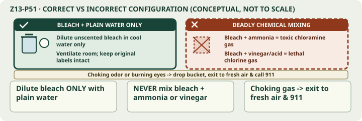

Z13-P51 · Home survival and utilities · New manuscript
Prevent deadly toxic gases by never mixing household cleaning chemicals
Stop accidental chlorine and chloramine gas poisoning during home water sanitization, flood cleanup, and outage disinfection.
When it applies · Mixing bleach solutions for emergency water containers, bathrooms, mold cleanup, or flooded basements.
Equipment · Plain unscented liquid sodium hypochlorite bleach (check exact label %), clean measuring spoons, cold tap water ONLY, and good ventilation.

Actions
- Mix household chlorine bleach STRICTLY with plain cool water per exact label directions—NEVER mix bleach with ammonia, window cleaners, urine/toilet cleaners, vinegar, lemon juice, or acidic rust/drain cleaners.[U13, M15]
- Recognize the exact chemical hazard: bleach + ammonia creates toxic chloramine gas, and bleach + acids (vinegar/toilet cleaner) creates lethal chlorine gas—both rapidly burn eyes, throats, and lungs even in open bathrooms.[U13, M15]
- Ventilate rooms well when cleaning, wear gloves, keep all chemical bottles in original labeled containers high out of children's reach, and NEVER reuse empty drink bottles to store diluted bleach.[U13, M16]
Failure recognition · Pouring bleach into an ammonia-cleaned emergency toilet bucket or mixing vinegar and bleach to scrub flood mold in a closed basement.[U13, M15]
Verify · Confirm bleach mixes ONLY with plain water, original labels stay intact, and acidic/ammonia cleaners are stored physically separate.[U13, M15]
Stop or change course · Sharp choking odor, burning eyes, coughing, or chest tightness while cleaning requires dropping the bucket, evacuating immediately to outdoor fresh air, and calling 911/Poison Control.[M15, M16, U13]
Evidence and editorial notes
- M15 · NIH / MedlinePlus · Poisoning (current web edition)
- Section: Suspected Poisoning, Ingestion, and Toxic Exposure · Conditions: Accidental ingestion, inhalation, or skin/eye contact with toxic plants, chemicals, or medications
Support: Call 911 immediately if the person is unresponsive, seizing, or struggling to breathe; otherwise contact Poison Control (1-800-222-1222 in the U.S.) with exact substance details and do not induce vomiting unless directed.
Limitations: Improvised emetics or charcoal can worsen caustic or hydrocarbon injury. · Conflicting evidence: None; aligns with Poison Control guidance.
Editorial note: Separates 911 life-threat activation from Poison Control guidance. · Specialist reviewer: Medical toxicology and poison control
Primary source · checked 2026-11-24 - M16 · National Capital Poison Center · Poison Control Emergency Guidance (current web edition)
- Section: Emergency Poison Help Guidance and Substance Documentation · Conditions: U.S. non-life-threatening or evolving poisoning exposure
Support: Save the container, plant sample (handled safely), or chemical label for Poison Control and EMS; follow exact dispatcher or toxicology specialist instructions without giving home remedies.
Limitations: Requires phone/comms access; remote settings require early evacuation for unknown toxic ingestions. · Conflicting evidence: None; reinforces Poison Control hotline and container preservation.
Editorial note: Guides documentation and anti-folklore poison response in Z10. · Specialist reviewer: Poison control and emergency medicine
Primary source · checked 2026-11-24 - U13 · CDC · How to Make Water Safe in an Emergency (2024-09-19)
- Section: Sanitation, Hand Hygiene, and Emergency Waste Containment · Conditions: Household water-service or sewer interruption
Support: Maintain separate handwashing stations using safe water and soap (or alcohol hand rub when hands are not visibly soiled), line emergency bucket toilets with heavy bags and tight lids when sewer service is unusable, and never mix bleach with ammonia or acids.
Limitations: Improvised sanitation is a temporary containment bridge until municipal sewer or licensed sanitation resumes; follow local health department disposal orders. · Conflicting evidence: None; prevents fecal-oral outbreaks and toxic chloramine gas mixing.
Editorial note: Core household sanitation and chemical-mixing boundary in Z13. · Specialist reviewer: Environmental health and sanitation specialist
Primary source · checked 2026-11-24
Source lineage · CDC Emergency Sanitation and Poison Control; new manuscript · Classification · New manuscript.